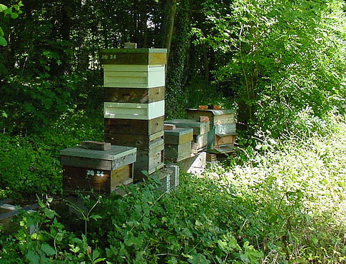
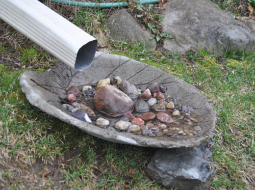

Protection from weather
Depending on the time of year, managed pollinators may need protection from heat, cold, wind, or moisture.
When placing pollinators in the field, it is best to arrange the hive or domicile with the openings facing south or southeast. This will help warm the hive in the morning and encourage bee activity. This practice is particularly important for early season crops (such as orchard fruit) when cool temperatures can reduce pollination time.
Shelter from heavy winds is also important, but there should be some air circulation around the hive to prevent dampness. There should be nothing around the hive to impede the entrance and exit of insects (e.g., overgrown vegetation).

Hives in a sheltered location (photo © Max Westby)
Provision of water
Like all animals, managed and wild pollinators need water to survive. In addition to needing water to drink, honey bees also need water to cool the hive in hot weather (using evaporative cooling) and maintain the right temperature for the brood. The honey bee colony also needs water to rehydrate crystallized honey, so that it can be eaten by the bees. Nurse bees need water to produce the gland secretions used to feed larvae.
On a very hot day, it can take several hundred workers to satisfy the water needs of the colony - bees that would otherwise be foraging for pollen and nectar. The energetic cost of gathering water can be reduced by simply placing containers of fresh water near the hives or domiciles if natural sources of surface water are not available nearby.
Water sources (and bees) should be kept away from drifting pesticides. Insects can easily become trapped and drown in simple dishes or buckets, so containers should have floating or leaning objects in the water that allow the insects to access the water from a surface to which they can comfortably cling. Some floating wood chips or sticks of wood leaning against the inside of the container will serve well. In more permanent containers or small ponds, floating plants such as water lilies can act as drinking platforms. Other options include pet or livestock watering devices, or even a simple puddle maintained by a dripping faucet.
When designing farms with wild pollinator conservation in mind, the presence of water near the nesting habitat can significantly increase survivorship and pollination activities.
Some pollinators, such as mason bees (including managed Osmia lignaria, the blue orchard bee) use mud to construct their nests. They require a source of suitable material nearby, best found near the edge of a pond or stream. The shorter the distance that the bees have to travel to find these essential resources, the more time they can spend pollinating the crops.

Example of a DIY pollinator-friendly water source (photo by Sue Chan)

Honey bee drinking from a source of standing water